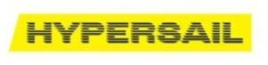

Trade Mark Journal No.2026/012 20 March 2026
WO0000001905772 (9,12,14,16,22,25,28)
Office of origin: Italy
Date of International Registration:29 August 2025
Date of designation in the UK:
29 August 2025

The trademark consists of an imprint depicting the wording HYPERSAIL in fancy characters, superimposed on a substantially rectangular figure, yellow in color, extending horizontally with the left-hand side slightly oblique and with each letter constituted by many small horizontal segments, black in color, with the left-hand end blurred and pointed, arranged one under the other.
The mark contains the colours yellow and black.
The color black appears in the small horizontal segments constituting the letters of the wording HYPERSAIL; the color yellow appears in the rectangular figure.
International priority date claimed: 28 April 2025
(Italy)
(302025000069618)
- Class 9
- Navigation software; LORAN navigation machines; navigation apparatus for boats; satellite navigational apparatus; navigation computers for cars; global positioning system [GPS] navigation devices; electric navigational instruments; satellite navigation systems; inertial navigational instruments; electronic navigational instruments; navigational instruments; electronic navigational and positioning apparatus and instruments; cases for satellite navigation devices; autonomous navigation systems for ships; electronic navigational, tracking and positioning apparatus and instruments; directional compasses; flotation vests; ring buoys for use in water rescue; navigational buoys; life buoys; navigation, guidance, tracking, targeting and map making devices; eyeglasses; sunglasses; anti-glare glasses; goggles for sports; swimming goggles; physical eyeglasses, sunglasses and goggles for sports authenticated by non-fungible tokens [NFTs]; eyeglass and sunglass cases; eyeglass and sunglass lenses; eyeglass and sunglass frames; eyeglass and sunglass chains; eyeglass and sunglass cords; contact lenses; magnifying glasses [optics]; cases adapted for contact lenses; 3D spectacles; smartglasses; binocular cases; recorded programs for handheld games with liquid crystal displays; electronic game software for handheld electronic devices; electronic game software for cellular phones; computer game software; computer game software, downloadable; recorded programs for electronic games; games cartridges for use with electronic games apparatus; computer game cartridges; video game cartridges; disks for electronic games; video game discs; computer game cassettes; video game cassettes; joysticks for use with computers, other than for video games; joystick chargers; memory cards for video game machines; simulators for the steering, navigation and control of vehicles; sports training simulators; steering wheels and tillers for computers, other than game controlling apparatus; earphones used for connecting to hand-held games; headsets for playing video games; ear pads for headphones; bags and cases adapted or shaped to contain computers; bags adapted for laptops; sleeves for laptops; cases for laptops; carrying cases adapted for computers; stands adapted for laptops; protective covers and cases for tablet computers; mouse [computer peripheral]; mouse pads; mobile telephones; mobile phone covers; mobile phone holders; downloadable graphics for mobile phones; bags and cases adapted or shaped to contain mobile phones; cell phone straps; battery chargers for cellular phones; cell phone battery chargers for use in vehicles; smartphones; covers for smartphones; smartphone holders; bags and cases adapted or shaped to contain smartphones; cases for smartphones incorporating a keyboard; smartphone straps; battery chargers for smartphones; smartphone battery chargers for use in vehicles; in-car telephone handset cradles; earpieces for remote communication; downloadable emoticons for mobile phones; gimbals for smartphones; smartwatches; wearable digital electronic devices for the sensing, recording, storing, sending and receiving of text, data, audio, image and video files across communications networks, including devices that communicate with smartphones, computers, computer peripheral devices, personal digital assistants, sound recording and sound reproducing apparatus, and internet sites; computer software and electronic apparatus related to the foregoing, namely for monitoring, processing, displaying, storing and transmitting data relating to a user's physical activity, compliance with health and fitness programs, geolocation, direction, distance, altitude, speed, steps taken, activity level, calories burned, navigational information, weather information and biometric data; computer software for accessing and searching databases related to any of the foregoing; battery chargers for smartwatches; battery chargers for smartwatches for use in vehicles; wrist rests for use with computers; laptop computers; personal computers; wearable computers; computer software platforms, recorded or downloadable; wearable video display monitors; personal digital assistants [PDAs]; computer programs, downloadable; touch sensitive electronic screens; smart rings, bracelets, and necklaces; smart wristbands that communicate data to smartphones; smart wristbands that communicate data to other electronic devices; protective helmets; headgear being protective helmets; fireproof automobile racing suits for safety purposes; face-shields for protection against accidents, irradiation and fire; gloves for protection against accidents; balaclavas for protection against accidents, irradiation and fire; shoes for protection against accidents, irradiation and fire; boots for protection against accidents, irradiation and fire; protection devices for personal use against accidents; garments for protection against accidents, irradiation and fire; garments for protection against fire; CD-ROMs featuring nautical competitions, car races and the history of automobile and watercraft manufacturers; DVDs featuring nautical competitions, car races and the history of automobile and watercraft manufacturers; CD-ROMs featuring high-performance sailboats, automobiles and water and land vehicles; DVDs featuring high-performance sailboats, watercraft, automobiles and water and land vehicles; CD-ROMs featuring information in the nautical and automotive fields; DVDs featuring information in the nautical and automotive fields; downloadable image files; downloadable video files; downloadable electronic publications featuring sailing as a sport; speed checking apparatus for water and land vehicles; speedometers for water and land vehicles; electric wire harnesses for watercraft and automobiles; steering apparatus, automatic, for water and land vehicles; voltage regulators for water and land vehicles; mileage recorders for water and land vehicles; kilometer recorders for vehicles; hands free kits for cellular phones; electric locks for water and land vehicles; navigation apparatus for vehicles [on-board computers]; electronic accumulators for water and land vehicles; accumulators, electric, for water and land vehicles; vehicle radios for water and land vehicles; remote control apparatus; batteries for water and land vehicles; artificial intelligence software for water and land vehicles; electronic data recorders for water and land vehicles; water and land vehicle locating apparatus; computer software for mobile applications that enable interaction and interface between vehicles and mobile devices; magnets; decorative magnets; lanyards especially adapted for holding cellular phones, MP3 players, cameras, video cameras, eyeglasses, sunglasses, magnetic encoded cards; cases especially made for photographic apparatus and instruments; cases adapted for CD players; cases adapted for DVD players; cases adapted for MP3 players; recorded content; audio recordings; video recordings; integrated circuit cards [smart cards]; computer operating systems; information technology and audiovisual equipment; photocopiers; image scanners; printers for use with computers; ticket dispensing terminals, electronic; electronic payment terminals, money dispensing and sorting devices; coin-operated mechanisms; computer peripherals; computer hardware; computer components and parts; safety, security, protection and signalling devices; alarms and warning equipment; access control systems; diving equipment; monitoring instruments; sensors and detectors; measuring, counting, alignment and calibrating instruments; monitoring apparatus, electric; downloadable virtual goods, namely, computer programs featuring competition sailboats, sports cars, racing cars, vehicles, electric vehicles, electric motors and engines, structural parts of boats and vehicles, spare parts and accessories for boats and vehicles, sails, unfitted covers for boats and marine vehicles, twines, ropes and string, nets, sacks for the transport and storage of materials in bulk, bicycles, clocks, wristwatches, pocket watches, stationery articles, clothing, footwear, headgear, eyewear and eyewear accessories, bags, sport bags, rucksacks, sports equipment, art, toys, video games and their accessories for use online and in online virtual worlds; downloadable virtual goods, namely, downloadable image files featuring virtual goods; recorded digital files featuring virtual goods; downloadable digital sailboats, watercraft, cars, competition sailboats, sports cars, racing cars, vehicles, electric vehicles, electric motors and engines, structural parts of boats, automobiles and vehicles, spare parts and accessories for boats, automobiles and vehicles, sails, unfitted covers for boats and marine vehicles, twines, ropes and string, nets, sacks for the transport and storage of materials in bulk, bicycles, clocks, wristwatches, pocket watches, stationery articles, clothing, footwear, headgear, eyewear and eyewear accessories, bags, sport bags, rucksacks, sports equipment, art, toys, video games and their accessories, all the above mentioned goods authenticated by non-fungible tokens [NFTs]; downloadable interactive characters, avatars and skins; downloadable digital files authenticated by non-fungible tokens [NFTs] using blockchain technology; downloadable digital files authenticated by non-fungible tokens [NFTs] and application tokens; downloadable digital files authenticated by non-fungible tokens [NFTs] featuring collectible images and videos; downloadable collectible images and videos authenticated by non-fungible tokens [NFTs]; downloadable collectible images authenticated by non-fungible tokens [NFTs] used with blockchain technology; digital tokens used with blockchain technology in the nature of data; digital tokens used with blockchain technology in the nature of data to represent a collectible item; downloadable digital files authenticated by nonfungible tokens [NFTs] using blockchain technology to represent a collectible item; downloadable digital files authenticated by non-fungible tokens [NFTs], enabling the authenticity, ownership, availability and trading of digital assets and creations on computer software platforms [software]; encoded record tokens; magnetically encoded record tokens; recorded tokens being magnetically encoded gift cards; gift tokens being encoded gift cards; gift tokens being magnetically encoded gift cards; prerecorded gift tokens being pre-recorded gift cards; pre-recorded tokens being pre-recorded gift cards; security tokens [encryption devices]; encoded gift vouchers; pre-recorded gift vouchers; utility tokens being digital assets using blockchain technology; fan tokens being digital assets using blockchain technology, namely digital objects for voting in team polls, predicting results in competitions and races, check-in for competitions and races, playing games, choosing drivers; downloadable multimedia files containing artwork, texts, audio and video authenticated by non-fungible tokens [NFTs]; downloadable multimedia files containing artworks, audio files, texts and videos relating to automobiles authenticated by non-fungible tokens [NFTs]; downloadable audio and video recordings authenticated by non-fungible tokens [NFTs]; downloadable image files authenticated by non-fungible tokens [NFTs]; downloadable digital media, downloadable digital assets, downloadable digital collectibles, downloadable digital tokens and downloadable digital files authenticated by non-fungible tokens [NFTs]; downloadable digital files authenticated by non-fungible tokens [NFTs]; downloadable digital files containing collectible images, texts, videos and/or music; downloadable music files authenticated by nonfungible tokens [NFTs]; downloadable graphics authenticated by non-fungible tokens [NFTs]; downloadable digital event tickets and digital documents; downloadable digital materials, namely, audio-visual content, videos, films, multimedia files, and animation; downloadable software for receiving and accessing non-fungible tokens; downloadable software for spending and trading non-fungible tokens; downloadable computer software for managing cryptocurrency transactions using blockchain technology; computer software for blockchain technology and cryptocurrency; downloadable computer software for creating, managing, storing, accessing, sending, receiving, exchanging, validating and selling digital assets, digital collectibles, digital tokens and non-fungible tokens [NFTs]; downloadable software for use in displaying, monetizing, buying, selling, trading, clearing, confirming digitized assets authenticated by non-fungible tokens [NFTs]; augmented reality computer hardware; augmented reality software; virtual reality software; augmented reality game software; augmented reality software for use in mobile devices; games software; virtual reality game software; downloadable software for providing access to an online virtual environment; downloadable computer software for the creation, production and modification of digital animated and non-animated designs and characters, avatars, digital overlays and skins for access and use in online environments, virtual online environments, and extended reality virtual environments; downloadable software and mobile application software providing a virtual marketplace; downloadable computer software for interactive games for use via a global computer network and through various wireless networks and electronic devices; downloadable software for accessing and streaming multimedia entertainment content; downloadable software for engaging in social networking and interacting with online communities; downloadable cryptographic keys for receiving and spending cryptocurrency; downloadable computer software relating to digital goods; downloadable software in the nature of a mobile application to browse and perform electronic transactions of retail consumer goods; virtual reality glasses; augmented reality glasses; augmented reality headsets; virtual reality headsets; head-mounted augmented reality displays; virtual reality gloves; virtual reality helmets; electronic communication devices for playing virtual reality games; virtual reality controllers; telecommunication apparatus in the form of jewellery; electronic numeric displays; hand-held electronic dictionaries; sports whistles; teaching robots; telepresence robots; wah-wah pedals; devices for the projection of virtual keyboards; data gloves; trackballs [computer peripherals]; climate control digital thermostats; dry suits; gimbals for digital cameras; sunglasses for pets; scientific, research, navigation, surveying, photographic, cinematographic, audiovisual, optical, weighing, measuring, signalling, detecting, testing, inspecting, life-saving and teaching apparatus and instruments, excluding those for use in the telecommunication field; apparatus and instruments for conducting, switching, transforming, accumulating, regulating or controlling the distribution or use of electricity, excluding those for use in the telecommunication field; apparatus and instruments for recording, transmitting, reproducing or processing sound, images or data, excluding those for use in the telecommunication field; recorded and downloadable media, computer software, blank digital or analogue recording and storage media; mechanisms for coinoperated apparatus; cash registers, calculating devices; computers and computer peripheral devices; diving suits, divers' masks, ear plugs for divers, nose clips for divers and swimmers, gloves for divers, breathing apparatus for underwater swimming; fire-extinguishing apparatus; excluding for use in telecommunication networks.
- Class 12
- High performance marine and aquatic vehicles; sailboats; masts for sailing boats; motorsailers; competition boats; bodies [hulls] for boats; rudders for boats; propeller shafts for boats; hydrofoils for boats; boat tillers; booms for boats; boat chocks; hoods for boats; boat launching trolleys; hatch covers for boats; seat cushions for boat seats; propellers for boats; boat cleats; rub rails for vessels; structural parts for boats; rudders for vessels; water scooters [personal watercraft]; propeller blade protectors for boats; steel hatch covers for vessels; tarpaulins adapted [shaped] for boats; fitted covers for boats and marine vehicles; water vehicles; racing cars; sports cars; motor cars; self-driving cars; hydrogen-fueled cars; electric vehicles, excluding air vehicles; hybrid vehicles, excluding air vehicles; autonomous land vehicles; trailers [vehicles]; physical competition sailboats, physical boats, physical racing cars, physical sports cars, physical vehicles, excluding air vehicles, authenticated by non-fungible tokens [NFTs]; structural parts of boats and automobiles, racing cars, sports cars, land and water vehicles; physical structural parts of sailboats, boats, competition boats, racing cars, sports cars, land and water vehicles, authenticated by non-fungible tokens [NFTs]; spare parts and accessories for competition sailboats, boats, automobiles, racing cars, sports cars, land and water vehicles; physical spare parts and physical accessories for competition sailboats, boats, automobiles, racing cars, sports cars, land and water vehicles, authenticated by non-fungible tokens [NFTs]; motors, electric, for land vehicles; engines for land vehicles; motors for land vehicles; vehicle seats, excluding for aircraft; motorcycles; safety belts for vehicle seats; safety seats for children, for vehicles; anti-theft devices for vehicles; prams; pushchairs; bags adapted for prams and pushchairs; parachutes; two-wheeled trolleys; human-powered trolleys and carts; motorized skateboards; mobility vehicles; vehicles excluding bicycles and air vehicles; apparatus for locomotion by land or water.
- Class 14
- Coins; commemorative coins; collectible coins; collectible monetary coin sets; monetary coin sets for collecting purposes; non-monetary coins; precious metals, unwrought or semi-wrought; alloys of precious metal; gold; palladium; semi-precious stones; precious and semi-precious gems; meditation stones; pearls [jewellery]; costume jewellery; trinkets [jewellery and imitation jewellery]; threads of precious metal [jewellery and imitation jewellery]; bracelets [jewellery and imitation jewellery]; ankle bracelets; necklaces [jewellery and imitation jewellery]; lockets [jewellery and imitation jewellery]; chains [jewellery and imitation jewellery]; ankle chains [jewellery and imitation jewellery]; rings [jewellery and imitation jewellery]; body-piercing rings; pins [jewellery and imitation jewellery]; earrings; lapel pins [jewelry and imitation jewellery]; ornamental pins; tie pins; tie clips; pendants [jewellery and imitation jewellery]; tiaras; medals; commemorative medals; cuff links; amulets [jewellery and imitation jewellery]; key rings [trinkets or fobs]; key tags of plastic; key rings of precious metal; key fobs of metal; key rings of metal; key rings [split rings with trinket or decorative fob]; split rings of precious metal for keys; charms for key rings; key rings [trinkets or fobs] incorporating a sound device; key rings [trinkets or fobs] incorporating optical fibers; key rings [trinkets or fobs] incorporating a cartoon character; key rings of imitation leather; key chains incorporating a sound device; key chains incorporating optical fibers; lanyards [keycords]; insignia of precious metal; badges of precious metal; jewelry caskets; clasps for jewellery; ornaments [jewelry and imitation jewellery]; shoe ornaments of precious metal; hat ornaments of precious metal; boxes of precious metal; commemorative boxes of precious metal; decorative boxes of precious metal; trophies of precious metal; trophies coated with precious metal alloys; trophies made of precious metal alloys; statues of precious metal and precious metal alloys; figurines [statuettes] of precious metal; statuettes of precious metal and their alloys; busts of precious metal; works of art of precious metal; lanyards of precious metal or coated therewith for carrying items such as keys; bottle caps of precious metal; ingots of precious metals; watches; control clocks [master clocks]; alarm clocks; automobile clocks; clock cases; cases for watches and clocks; watch springs; desk clocks; pendulum clocks; table clocks; travel clocks; wall clocks; hands for pendulum clocks, wall clocks, table clocks, floor clocks; clockworks; clocks and watches, electric; clocks incorporating radios; watch dials; anchors [clock- and watchmaking]; barrels [clock- and watchmaking]; cases for timepieces; movements for clocks and watches; chronometers; chronographs [watches]; wristwatches; pocket watches; automatic watches; diving watches; jewelry watches; mechanical watches; sports watches; stopwatches; watch bands of metal for stopwatches; watch bands of plastic for stopwatches with liquid crystal display screens; clocks with liquid crystal display screens; watches with liquid crystal display screens; wall clocks with liquid crystal display screens; quartz watches; quartz wristwatches; quartz wall clocks; analog watches; analog wristwatches; analog wall clocks; watch bands; cases for watches [presentation]; watch cases [parts of watches]; watch chains; watch clasps; watch crowns; watch glasses; watch pouches; buckles for watch bands; watchstraps; watches containing a game function; apparatus for timing sports events; statues and figurines, made of or coated with precious or semi-precious metals or stones, or imitations thereof; ornaments, made of or coated with precious or semi-precious metals or stones, or imitations thereof; jewellery boxes and watch boxes; precious metals and their alloys; jewellery, precious and semi-precious stones; horological and chronometric instruments.
- Class 16
- Postage stamps; commemorative postage stamps; stamps for collectors; commemorative stamp sheets; commemorative stamps [seals]; stamp albums; stamp mounts; sleeves for holding and protecting stamps; file jackets for holding and protecting stamps; obliterating stamps; drawing paper; wrapping paper; writing paper; bibs of paper; boxes of paper or cardboard; containers made of paper; cocktail mats of paper; towels of paper; paper coffee filters; table linen of paper; table napkins of paper; tablemats of paper; place mats of paper; tablecloths of paper; handkerchiefs of paper; printed paper signs; pamphlets; posters; calendars; catalogues; magazines [periodicals]; yearbooks [printed publications]; books; booklets; periodicals; printed guides; travel books; guide books; manuals [handbooks]; directories [printed matter]; flyers; newsletters; printed teaching materials; printed educational materials; graphic representations; graphic reproductions; picture postcards; souvenir postcards; souvenir postcards incorporating a sound device; souvenir programs; business cards; postcards; printed cards; badges of cardboard; holders of paper or cardboard for badges; printed publications; bookbinding material; photographs [printed]; photograph albums; photograph albums incorporating a sound device; apparatus for mounting photographs; picture mounts made of cardboard; albums; stickers [stationery]; albums for stickers; drawing pads; children's books; colouring books; index cards [stationery]; painting sets for children; bookmarks; fountain pens; fountain pens incorporating a sound device; fountain pens incorporating optical fibres; ball-point pens; ball-point pens incorporating a sound device; ball-point pens incorporating optical fibres; balls for ball-point pens; pens [writing implements] incorporating tips for operating touchscreen devices; writing pens; pens for writing incorporating a sound device; pens for writing incorporating optical fibres; felt-tip markers; felt pens incorporating a sound device; felt pens incorporating optical fibres; pencils; pencils incorporating a sound device; pencils incorporating optical fibres; pastels [crayons]; pastels incorporating a sound device; pastels incorporating optical fibres; decorative objects [ornaments] made of paper for pens and pencils; extenders and toppers for pens and pencils; stands for pens and pencils; pen and pencil boxes; pen and pencil cases; penholders; pencil holders; covers [stationery]; document files [stationery]; desk pads; desktop organizers; exercise books; note books; pads [stationery]; sheets of paper for taking notes; agendas and diaries [printed matter]; desk diaries; covers for agendas; protective covers for books; book jackets; binders for office use; labels of paper or cardboard; adhesive labels, not of textile; paperweights; pencil sharpeners, electric or non-electric; drawing books; paper cutters [office requisites]; erasers; letter trays; clipboards; paper-clips; name badge holders [office requisites]; adhesive tape dispensers [office requisites]; adhesive tapes for stationery or household purposes; gummed tape [stationery]; artists' pastels; artists' pencils; artists' pens; modelling clay; modelling paste; modelling wax, not for dental purposes; paintings [pictures], framed or unframed; pictures; portraits; bibs, sleeved, of paper; drawing brushes; writing brushes; storage containers made of paper; letter holders; loose-leaf binders; clips for offices; typewriters; blackboards; small blackboards; printed geographical maps; terrestrial globes; shopping bags of plastic; shopping bags of paper; bags [envelopes, pouches] of paper or plastics, for packaging; carrier bags of paper or plastic; placards of paper or cardboard; engraving plates; numbers [type]; letters [type]; embroidery designs [patterns]; banners of paper; flags and pennants of paper; flags of paper; flags of paper incorporating a sound device; flags of paper incorporating optical fibres; pennons of paper; paper passes; tickets; ticket holders of paper; non-magnetically encoded passes and identification cards of paper for access to a restricted area; decalcomanias; iron-on transfers of paper; three-dimensional decalcomanias for use on any surface; lanyards for carrying paper badges and paper passes; works of art, decorations and figurines of paper or cardboard, and architects' models; art and modelling materials and media, namely, art mounts, photograph mounts, modelling clay, modelling paste, and plastics for modelling; arts, crafts and modelling equipment; filtering materials of paper; wrapping, packaging and storage bags and articles made of paper, cardboard or plastic; writing and stamping instruments; correcting and erasing instruments; articles for use in printing and bookbinding, namely printing blocks, printing type, bookbinding office apparatus and machines, bookbinding materials; packing [cushioning, stuffing] materials of paper or cardboard; bottle wrappers of paper or cardboard; franking machines for office use; correcting ink [heliography]; paper and cardboard; printed matter; bookbinding material; photographs; stationery and office requisites, except furniture; adhesives for stationery or household purposes; drawing materials and materials for artists; paintbrushes; instructional and teaching materials; plastic sheets, films and bags for wrapping and packaging; printers' type, printing blocks; lanyards of precious metal or coated therewith for carrying cards, identity cards, name badges and plastic name badges.
- Class 22
- Sails for boats; marine sails; canvas for sails; sails; sail rigging; covers for boats, not fitted; unfitted covers for boats and marine vehicles; cords made of textile fibers; synthetic ropes; ropes for marine use; string; awnings for vessels; bags for storage purposes; cloth bags for storage [but not luggage or travel]; ropes and string; nets; tents and tarpaulins; awnings of textile or synthetic materials; sails; sacks for the transport and storage of materials in bulk; padding, cushioning and stuffing materials, except of paper, cardboard, rubber or plastics; raw fibrous textile materials and substitutes therefor.
- Class 25
- Jackets [clothing]; rainwear; waterproof clothing; wind-resistant jackets; wind pants; wind suits; wind vests; down jackets; bomber jackets; parkas; blazers; overcoats; coats; dust coats; raincoats; rash guards; deck shoes; beach clothes; bathing suits; bathing caps; swimming costumes; bathing trunks; bathing suits for men; bikinis; bath robes; trench coats; vests; padded vests; cardigans; pullovers; sweaters; shirts; tee-shirts; polo shirts; sport shirts; blouses; sweatshirts; jerseys [clothing]; sports jerseys; trousers; shorts; Bermuda shorts; jeans; skirts; overalls; jogging suits; training suits; track suits; automobile racing suits not in the nature of protective clothing; suits; dresses; singlets; braces [suspenders] for clothing; wristbands [clothing]; aprons [clothing]; combinations [clothing]; clothing for gymnastics; leggings [leg warmers]; leggings [trousers]; pockets for clothing; collars [clothing]; ready-made clothing; golf clothing, other than gloves; body warmers; knee warmers [clothing]; knitwear [clothing]; sweat bands; gaiters; pocket squares; underwear; slips [undergarments]; pyjamas; dressing gowns; nightgowns; girdles; clothing for children; babies' clothing; babies' overalls; baby bibs, not of paper; children's and infants' cloth bibs; bibs, not of paper; romper suits for children; romper suits for babies; rompers; layettes [clothing]; baby sleepwear; socks; stockings; tights; hosiery; shoes; sports shoes; gymnastic shoes; sneakers; slippers; mules; sandals; boots; footwear for sports; flip-flops; clogs; bath sandals; bath slippers; soles for footwear; footwear uppers; fittings of metal for footwear; inner soles; tips for footwear; heelpieces for footwear; heels; non-slipping devices for footwear; welts for footwear; shoe straps; shoe inserts for non-orthopedic purposes; toe caps [parts of footwear]; tongues or pullstraps for shoes and boots; overshoes; galoshes; gaiter straps; footmuffs, not electrically heated; neckwear; scarves; bandanas [neckerchiefs]; foulards [clothing]; neckties; gloves [clothing]; driving gloves; belts [clothing]; muffs [clothing]; mittens; shawls; sashes for wear; money belts [clothing]; caps being headwear; hats; cap peaks; visors being headwear; berets; headbands [clothing]; hoods [clothing]; balaclavas; helmet liners [headwear]; sun visors [headwear]; ear muffs [clothing]; masks for protection against the cold; clothing incorporating digital connections; clothing incorporating infant carriers; clothing incorporating slings for carrying infants; smart clothing equipped with wireless data communication devices; smart clothing with built-in biochip sensors; clothing incorporating LEDs; sportswear incorporating digital sensors; gloves with conductive fingertips that may be worn while using hand-held electronic touch screen devices; thermal gloves for touchscreen devices; footwear incorporating digital connections; smart footwear equipped with wireless data communication devices; smart footwear with built-in biochip sensors; headwear incorporating digital connections; physical clothing, physical footwear, physical headwear, authenticated by non-fungible tokens [NFTs]; clothing, footwear, headwear.
- Class 28
- Toy boats; waterskis; gloves for water-skiing; bindings for water skis; carrying cases for water skis; sailboards; masts for sailboards; sailboard leashes; harness for sailboards; sailboard foot straps; water wing swim aids for recreational use; inflatable floats for swimming; toys; amusement apparatus adapted for use with an external display screen or monitor; apparatus for games adapted for use with an external display screen or monitor; video game machines for use with televisions; video game machines; television game sets, namely, games adapted for use with television receivers; apparatus for games; amusement machines, automatic and coin-operated; amusement machines, other than those adapted for use with television sets and with an external display screen or monitor; pocket-sized apparatus for playing video games; pocket-sized video games; pocket-sized electronic games; hand-held video games; portable electronic games; portable electronic toys; hand-held units for playing video games; stand alone video game machines; computer game equipment, namely computer game joysticks and game controllers for computer games; electronic games consoles adapted for use with an external display screen or monitor; controllers for game consoles; joysticks for video games; bags specially adapted for hand-held video game apparatus; bags specially adapted for video games consoles; games consoles; gamepads for use with game consoles; handheld game consoles; handheld video game consoles; video game consoles; video game consoles for use with an external display screen or monitor; protective carrying cases specially adapted for video game consoles for use with an external display screen or monitor; mouse for video game machines; gaming keyboards; toy models; models featuring racing or regatta scenes [toys]; scale model competition sailboats and racing cars [toys]; scale model competition sailboats and racing cars for collectors; scale model vehicles [toys]; scale model vehicles for collectors; physical model watercraft and cars, being toys, authenticated by non-fungible tokens [NFTs]; physical model water and land vehicles, being toys, authenticated by non-fungible tokens [NFTs]; physical model sailboats and cars, for collectors, authenticated by non-fungible tokens [NFTs]; physical model vehicles for collectors, authenticated by non-fungible tokens [NFTs]; full-size toy sailboat and car replicas; full-size toy water and land vehicle replicas; full-size toy tiller and steering wheel replicas; water and land vehicle construction toys; toy vehicles; pull-along toy vehicles; toy pedal karts for kids; ride-on toys; ride-on toy vehicles, electric, reproducing the original models; toy go-karts for children in pedal version or working with batteries; tricycles for infants [toys]; push scooters [toys]; balance bicycles [toys]; toy trucks; toy trailers for transporting cars; radio-controlled toy vehicles; radio-controlled toy cars and boats; toy telephones; plush toys; teddy bears; playing cards; toys designed to be attached to car back seats; padded toys for seatbelts; streetboards; ankle guards [sports articles]; ankle pads for sports use; ankle guards for skating; ankle pads for skating; abdomen protectors for sports; golf bag carts; sticks for fans and for entertainment [novelty items]; toy sticks for fans and for entertainment shaped as flags [novelty items]; toy lanyards; sports articles and equipment; fishing equipment; flippers for swimming; floats for swimming; swimming belts; swimming gloves; swimming jackets; inflatable armbands for swimming; swimming floats for recreational use; swimming kick boards; party poppers; streamers [party novelties]; novelties for parties, dances [party favors, favours]; balloons [party novelties]; paper party hats; decorations for artificial Christmas trees; fairground and playground apparatus; portable games and toys incorporating telecommunication functions; toy dough; party poppers [party novelties]; games, toys and playthings; video game apparatus; gymnastic and sporting articles; decorations for Christmas trees.
FERRARI S.P.A.
Representative: Dr. Modiano & Associati SpA, Via Meravigli 16, I-20123 Milano, ITALY